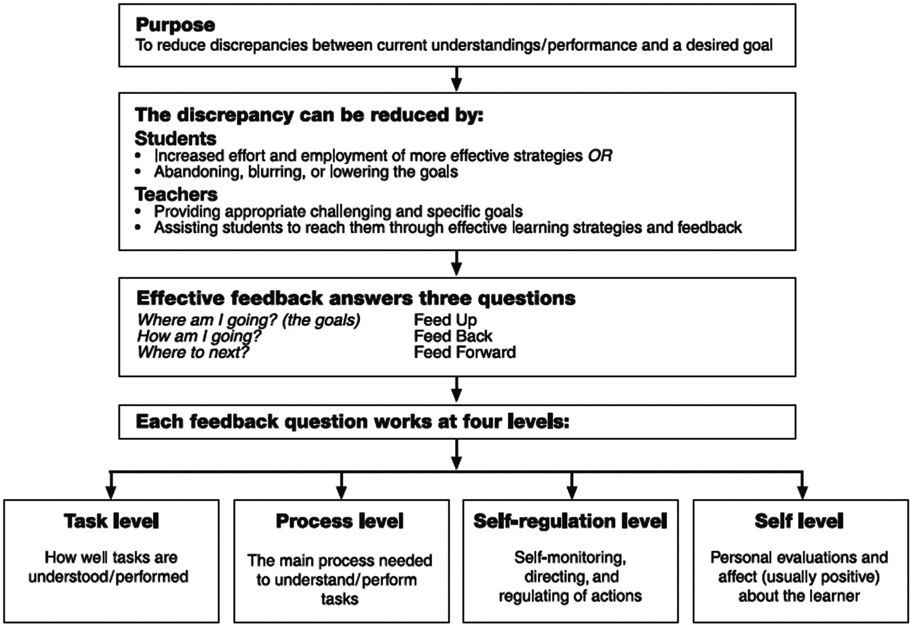
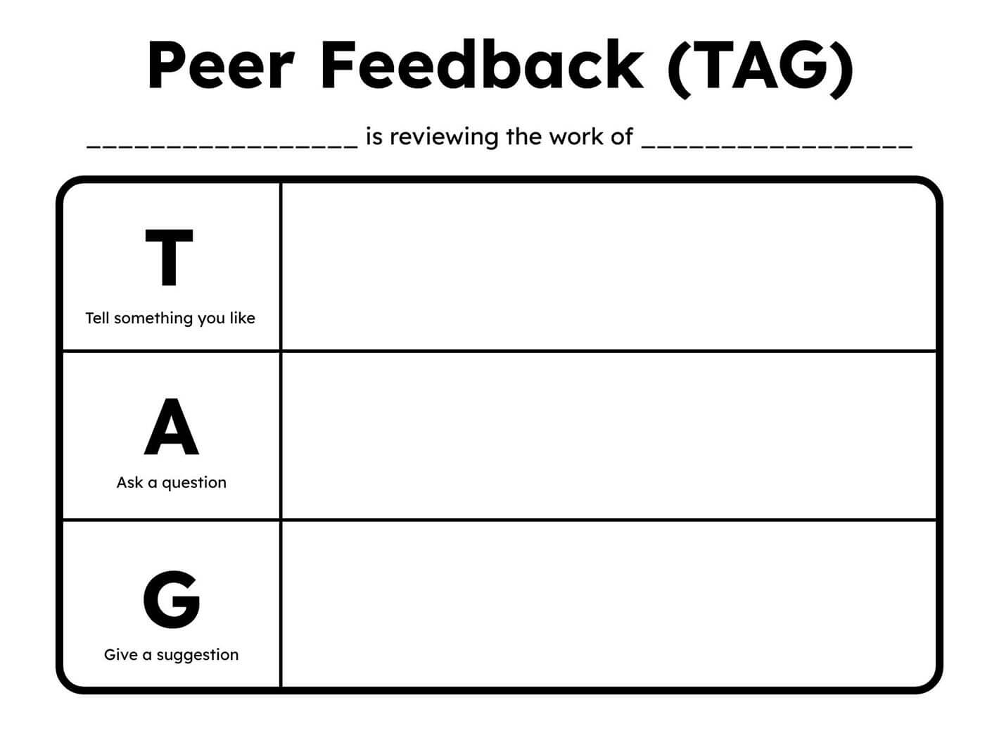
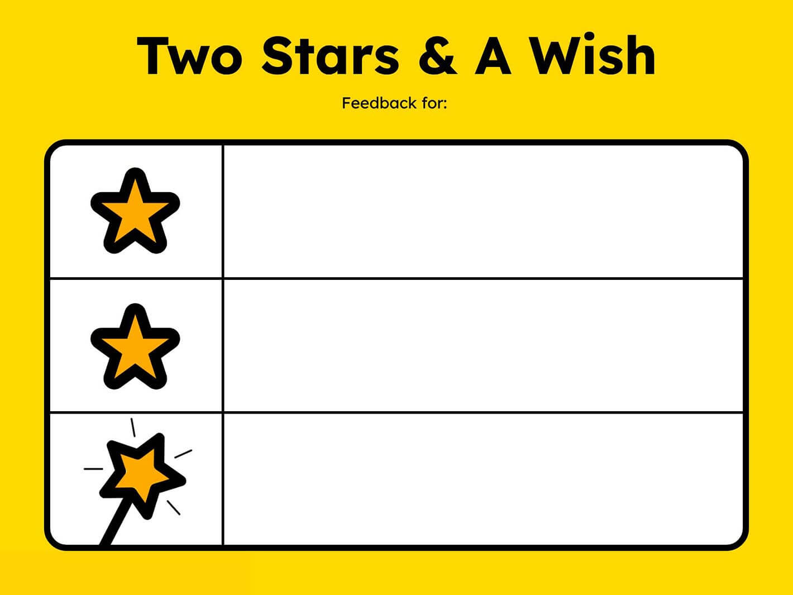

Formative Assessment Frameworks & GenAI
2.5-hour interactive workshop for Capital Normal University students. Login with your real name so your instructor can track your learning on the live dashboard.
Type your real name, then press Login. A previous test name on this browser is not used until you login again.
How formative assessment frameworks help you learn — with GenAI
Today we treat formative assessment (FA) as a research-based way of learning, not only as something teachers do to you. We walk Dylan Wiliam’s five strategies one by one: what each strategy means, why it matters for university study across majors, which concrete techniques you can use (for example TAG in peer feedback), and how GenAI can support the strategy without replacing your thinking. After Strategy 3 (feedback), we deepen with Hattie & Timperley’s model of feedback — its structure, levels, and impact — before returning to peer learning and ownership of learning.
Part 1
What counts as formative · five strategies · feedback framework
Part 2
Peers · ownership · human judgment · download your PDF pack
Is this formative?
Black & Wiliam (1998) argue that assessment becomes formative only when evidence about learning is actually used to adapt what happens next — teaching, studying, or revising. A score, a comment, or a quiz is not automatically formative. Ask: Did this information change the next learning step? Vote Yes or No for each university scenario. Your votes appear on the instructor dashboard under your name.
1. In a History seminar, you submit a draft. The tutor comments on your argument structure; you revise before the final submission.
2. Mid-term scores are posted. The class moves on; there is no reteaching or revision chance.
3. After a lecture, students answer a 2-minute exit ticket. Tomorrow’s seminar starts by addressing the most common confusion.
4. Final comments and a grade arrive after the term ends. There is no next assignment in the course.
Key
1 YES · 2 NO · 3 YES · 4 NO. Scenarios 1 and 3 change what happens next; 2 and 4 record performance without adapting learning.
Why formative assessment matters
Large syntheses of educational research (e.g., Hattie, 2009) consistently place feedback among the strongest influences on achievement — but only when learners can use it. Black & Wiliam show that FA works by closing the gap between current performance and a valued goal. Nicol & Macfarlane-Dick and Heritage emphasise that students become more self-regulated when they understand success criteria, see evidence of where they are, and act on next steps. For university students in any major, FA is how you turn assignments, seminars, labs, and studios into cycles of improvement rather than one-shot grading events.
- Feedback is powerful when it is usable, timely, and tied to criteria.
- The “gap” between now and the goal is the engine of formative practice.
- Self-regulation grows from criteria + evidence + action — not from grades alone.
Five key strategies of formative assessment
Wiliam organises classroom formative assessment around three questions — Where is the learner going? Where is the learner now? How to get there? — and shows how teachers, peers, and learners each contribute. The famous five strategies are practical answers to those questions: clarify intentions and criteria; elicit evidence; provide forward-moving feedback; activate peers as resources; activate learners as owners of their learning. Today we emphasise peer and learner moves you can own in university courses, then ask how GenAI can support each move without replacing judgment.

Wiliam’s five key strategies matrix.
Match each strategy
Before we unpack techniques, check that you can map each strategy to its student-facing purpose. Matching builds a mental map you will reuse when designing GenAI prompts later. Submit when all five are set — your instructor can see match accuracy by student.
Clarifying learning intentions & success criteria
Rationale. Learners cannot aim at excellence they cannot see. Strategy 1 asks us to make learning intentions and success criteria public, shared, and usable — before work begins. Andrade & Heritage (2017) distinguish product criteria (qualities of the finished work) from performance criteria (qualities of the process or skills). In university settings this means decoding assignment briefs and rubrics into “I can…” statements, comparing exemplars, and knowing what “good enough” and “excellent” look like in your discipline — history essays, lab reports, lesson plans, performances, or code.
Your move: Before drafting, turn the brief/rubric into checkable criteria. If you cannot explain excellence in one sentence, you are not ready to draft.
你的行动：动笔前完成标准解码；若无法用一句话说明优秀，就还没准备好动笔。
Techniques
Activity 3 · Product vs performance criteria
Product criteria describe the artefact (structure, evidence, accuracy). Performance criteria describe how you work (time management, collaboration, rehearsal habits). Both matter; confuse them and feedback becomes vague.
Which is a product criterion?
GenAI support · Success Criteria Translator
Use GenAI to accelerate decoding — then verify against your tutor’s rubric. You remain responsible for accuracy and integrity.
Eliciting evidence of learning
Rationale. If you only discover misunderstandings on the final exam, the cost is too high. Strategy 2 is about engineering opportunities — planned and in-the-moment — to make thinking visible. Lin (2019) distinguishes planned tools (quizzes, homework, portfolios) from contingent tools (oral questioning, observation, responsive checks). As a university student you can also elicit evidence for yourself: mini self-quizzes, explaining a concept aloud, exit tickets after lectures, or practice items that reveal which idea you still confuse.
Your move: Build quick checks into study and seminars so gaps surface early enough to act.
你的行动：把快速检查嵌入学习与研讨，让差距尽早暴露。
Techniques
Quick check
Which move best elicits evidence during learning?
GenAI support · Pre-Mortem Plan
Feedback that moves learners forward
Rationale. Feedback is formative only when it helps the learner take a better next step. Praise without information, or exhaustive error marking without priority, rarely improves the next draft. Effective practice often focuses on one criterion at a time, combines descriptive strength with an actionable next step, and may use multimodal forms (written, audio, annotated). The next screens deepen this with Hattie & Timperley’s framework and Shute’s guidelines — because Strategy 3 is the bridge into a fuller theory of feedback.
Your move: Seek next-step feedback on one criterion, then revise. If no action follows, it was not formative for you.
你的行动：针对一个标准寻求下一步反馈并修改；若没有行动，对你而言就不算形成性。
Techniques
Quick check
Which feedback is most formative?
GenAI support · Focused Feedback Generator
Hattie & Timperley (2007): the power of feedback
Structure. Hattie & Timperley model feedback as information that reduces the discrepancy between current performance and a goal. It should help learners answer three questions: Feed Up — Where am I going? (goals/criteria); Feed Back — How am I going? (progress relative to the goal); Feed Forward — Where to next? (activities that close the gap).
Levels & impact. Feedback can operate at Task, Process, Self-regulation, or Self levels. Task/process/self-regulation feedback typically supports improvement; person-level praise (“You’re smart”) often has little effect on the next draft and can even undermine productive struggle. When you ask GenAI for feedback, request process-level next steps — then verify with your own judgment and course criteria.
层面与影响：反馈可作用于任务、过程、自我调节或自我层面。前三者更利于改进；人格赞美对下一稿帮助有限。向 GenAI 要反馈时，优先要过程层面的下一步，再用自己的判断与课程标准核实。

Hattie & Timperley’s (2007) model of feedback.
Map the three questions & levels
“Where to next?” is also called…
Which level is this feedback?
“Add two more sources that contradict your claim, then explain how you respond.”
Formative feedback guidelines (Shute, 2008)
Shute’s review translates research into practical prescriptions for formative feedback. Use these as a checklist when you give peer feedback, ask tutors for comments, or prompt GenAI.
- Focus on the task / criteria, not the person’s worth
- Elaborate with what / how / why — not only right/wrong
- Be specific and clear; avoid cognitive overload
- Offer actionable next steps in manageable units
- Support learner agency: feedback to use, not a final verdict
Scenario
A peer writes: “You’re amazing! Maybe fix some stuff.” What should you ask them to revise toward Shute’s guidelines?
Break
10–15 minutes
After the break: Strategy 4 (peers · TAG) · Strategy 5 (ownership) · human judgment · download your materials.
Peers as instructional resources
Rationale. Peers can provide more frequent, criterion-based comments than any single tutor can. But unstructured peer talk often stays vague (“nice!”). Strategy 4 therefore uses protocols that force specificity. Two widely used techniques: TAG (Tell something you like · Ask a question · Give a suggestion) and Two Stars and a Wish (two strengths + one improvement). Keep reviews focused on one or two shared criteria so cognitive load stays manageable and feedback stays usable.
Your move: Give and receive structured peer feedback on shared criteria — one focused review task at a time.
你的行动：基于共同标准做结构化同伴反馈。
Techniques

TAG peer-feedback structure.

Two Stars & a Wish.
GenAI support · Targeted Peer Review Builder
Owners of your own learning
Rationale. The long-term aim of formative assessment is that learners internalise the three questions: Where am I going? Where am I now? How do I get there? Strategy 5 develops ownership through self-assessment checklists, SMART goals after feedback, portfolios, and reflection across assignments. GenAI can help you rephrase feedback into a plan — but you choose the goal, the resource, and the honesty of the self-check.
Your move: Self-assess against criteria before submit; after feedback, set one SMART goal and track it to the next task.
你的行动：提交前对照标准自评；收到反馈后设定一个 SMART 目标并追踪到下一次任务。
Techniques

Example self-assessment checklist — recreate with your university criteria.
GenAI support · Learning Reflection Planner
What must stay human
GenAI can accelerate practice, draft stems, and cluster misconceptions. You still set direction, judge truth against criteria, offer empathy in peer feedback, design the checks you need, and protect academic integrity. Practise and revise with GenAI — do not outsource authorship. Spontaneous formative moments in class still need human noticing that no prompt can fully replace.
You set direction; GenAI can power practice — judgment stays human.
Personal session dashboard
These totals are also visible to your instructor under your login name.
Exit reflection
Write: (1) one strategy you will use, (2) one GenAI idea, (3) one non-negotiable you will protect.
Saved.
Your note: No reflection yet.
Thank you
GenAI = power and pace. You = direction and judgment. Formative assessment remains a human conversation about growth.
Dr April Jiawei Zhang · City University of Macau · aprilzhang@cityu.edu.mo